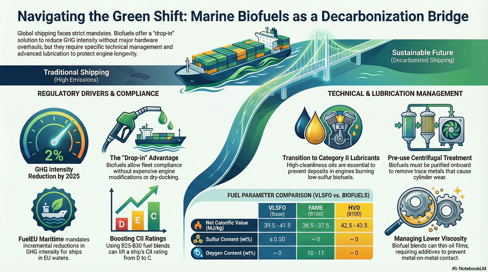

第一章 全球海運脫碳趨勢與生質燃料之定位
隨著全球氣候變遷議題從科學共識轉向強制性的法律約束，國際海運業正處於能源轉型的十字路口。航運業排放約佔全球溫室氣體（GHG）總量的 2% 至 3%，而其中大部分排放源自燃燒高硫燃油（HSFO）或極低硫燃油（VLSFO）的大型遠洋船舶。為了落實《巴黎協定》將全球升溫限制在 1.5°C 以內的目標，國際海事組織（IMO）與歐盟（EU）相繼發布了具備強制約束力的減排時間表。在眾多替代燃料方案——如液化天然氣（LNG）、甲醇、氨、氫及電力——之中，生質燃料（Biofuels）因其具備「即插即用」（Drop-in）的優勢，成為現有船隊無需大規模改裝主機硬體即可實現合規的最優路徑。
生質燃料的獨特性在於其碳循環的閉環性質。雖然在船舶主機中燃燒生質燃料仍會排放 CO2，但由於這些碳元素源自生物質在生長過程中所吸收的大氣 CO2，因此從生命週期（Well-to-Wake, WtW）的角度來看，其淨排放量顯著低於化石燃料。這種特性使其在面對 2025 年正式生效的歐盟 FuelEU Maritime 條例以及 IMO 的碳強度指標（CII）時，成為船東手中極具彈性的合規工具。
第二章 生質燃料之來源、生產工藝與技術規格
生質燃料並非單一物質，而是一個涵蓋多種來源與生產路徑的家族。針對船舶大型二衝程主機的應用，目前主要聚焦於脂肪酸甲酯（FAME）、加氫處理植物油（HVO）以及生質甲醇（Bio-methanol）。
2.1 脂肪酸甲酯（FAME）的化學與生產
FAME 是傳統意義上的「第一代」或「第一點五代」生質柴油。其主要原料包括廢棄食用油（UCO）、植物油（如菜籽油、大豆油、棕櫚油）以及動物脂肪。生產 FAME 的核心工藝是「酯交換反應」（Transesterification），即在催化劑（通常是強鹼如氫氧化鈉或甲醇鈉）的作用下，將油脂中的三酸甘油酯與甲醇進行反應。
三酸甘油酯 + 3 CH3OH → 3 FAME + 甘油
在生產過程中，副產品甘油必須被徹底分離，否則會導致主機噴油嘴結垢及濾器堵塞。根據 EN 14214 或 ASTM D6751 標準，優質的 FAME 應具備極低的游離脂肪酸及微量元素（如磷、鈉、鉀）含量。FAME 的主要缺點在於其含氧量約為 10% 至 11%，這降低了其低熱值（LCV），且其化學穩定性較差，長期儲存易發生氧化沉澱。
2.2 加氫處理植物油（HVO）的優勢
HVO 被視為「第二代」生質燃料，其生產過程涉及加氫脫氧（Hydrodeoxygenation）與異構化反應（Isomerization）。與 FAME 不同，HVO 的產物是純粹的石蠟基烴類，其分子結構與石油基柴油幾乎一致，但不含硫、不含氧且不含芳香烴。
HVO 的低熱值（約 43 MJ/kg）與化石柴油相當，且十六烷值（Cetane Number）極高，燃燒更為完全。由於 HVO 具有優異的低溫性能（低冷濾堵塞點, CFPP），它是極地航線或低溫環境下大型船舶的理想選擇。
2.3 生質甲醇與其他新興來源
生質甲醇是通過生物質氣化產生合成氣（CO 與 H2），再進行催化合成。隨著甲醇雙燃料主機訂單的激增，生質甲醇的需求預計將在 2026 年後大幅上升。此外，藻類生質燃料及木質纖維素燃料（第三、四代）雖然能量密度高且不與糧食競爭，但目前仍處於研發或小規模試點階段，尚未實現商業規模的船用供應。
表 1：主要船用燃料與生質燃料物理特性對比
| 燃料參數 | 單位 | VLSFO (基準) | FAME (B100) | HVO (B100) | Bio-Methanol |
|---|---|---|---|---|---|
| 低熱值 (LCV) | MJ/kg | 39.5 - 41.5 | 36.5 - 37.5 | 42.5 - 43.5 | 19.5 - 20.5 |
| 運動黏度 (40°C) | mm²/s | 20 - 500 (50°C) | 3.0 - 5.0 | 2.0 - 3.5 | 0.5 - 0.6 |
| 密度 (15°C) | kg/m³ | 920 - 990 | 870 - 890 | 770 - 790 | 790 - 800 |
| 十六烷值 | - | 40 - 45 | 50 - 55 | 70 - 90 | N/A |
| 硫含量 | wt% | ≤ 0.50 | ~ 0 | ~ 0 | ~ 0 |
| 氧含量 | wt% | ~ 0 | 10 - 11 | ~ 0 | 50 |
第三章 全球監管框架深度解析：FuelEU 與 IMO 規則
法規是推動生質燃料市場發展的齒輪。2025 年是一個標誌性的年份，因為歐盟的 FuelEU Maritime 條例正式生效，這對全球航運業產生了連鎖反應。
3.1 FuelEU Maritime：溫室氣體強度的硬約束
FuelEU Maritime 設定了船舶在歐盟港口停留及航行期間所使用能源的溫室氣體強度（GHG Intensity）限制。其計算基於「井到槳」（Well-to-Wake）的全生命週期模型，不僅包含燃燒排放（Tank-to-Wake），還包含燃油提取、運輸及生產過程中的排放（Well-to-Tank）。
2025 年開始，溫室氣體強度必須比 2020 年的基準（91.16 gCO2e/MJ）降低 2%，到 2030 年需降低 6%，隨後減排要求呈指數級增長。
生質燃料的合規價值：
由於生質燃料在計算中擁有極低的 WtT 排放因子（甚至為負值，若考慮碳捕捉），使用 B24 或 B30 混合燃料可以顯著拉低整船的平均排放強度。例如，一艘使用 B25 混合油的貨櫃船，其 CII 評級可從 D 級提升至 C 級，並輕鬆滿足 FuelEU 的 2025 年減排要求。
3.2 IMO CII 與中短期減排目標
IMO 的碳強度指標（CII）將船舶分為 A 至 E 五個等級。由於 CII 的分級閾值每年下調約 2%，這意味著如果不採取技術改進或燃料更換，現有船舶的評級會逐年惡化。對於 5,000 GT 以上的大型船舶，若連續三年評為 D 級或一年評為 E 級，必須提交糾正計劃。生質燃料作為「直接替代燃油」，是目前提升 CII 評級成本最低、風險最小的手段，因為它不需要昂貴的塢修改裝。
3.3 經濟機制：EU ETS 與罰金壓力
自 2024 年起，海運業已被納入歐盟排放交易系統（EU ETS）。船東必須根據其在歐盟相關航線上的 CO2 排放量購買排放配額（EUA）。2025 年，船東需負擔 70% 的排放配額，到 2026 年則增加至 100%。
當 EUA 的價格高企（如每噸 CO2 達 80-100 歐元）時，生質燃料的高成本部分被節省下來的配額費用所抵銷。此外，FuelEU Maritime 規定，未達標的能源每兆焦耳（MJ）將面臨罰金，這進一步推動了生質燃料的經濟競爭力。
第四章 目前與未來的供需狀況及市場競爭
生質燃料的市場動態受制於產能分配、區域政策及跨部門競爭。
4.1 供應端的區域性特徵
目前全球生質燃料供應主要集中在大型補給港，如新加坡、阿姆斯特丹-鹿特丹-安特衛普（ARA）地區。
- 歐洲地區：受歐盟「Fit for 55」法案驅動，產能正向第二代廢棄物基生質燃料（如 UCOME）傾斜。2025 年歐盟生質柴油產量預計達 160.7 億公升。
- 亞太地區（新加坡）：2025 年新加坡的生質燃料銷量顯著增長，且市場正從現貨交易轉向長期合約（約 80% 需求由長約覆蓋），顯示出市場正趨於成熟。
- 北美地區：受美國可再生燃料標準（RFS）和環保署（EPA）「Set Rule」驅動，供應保持穩定，但主要針對公路運輸。
4.2 未來需求狀況與挑戰
根據預測，到 2030 年，全球約 20% 的船隊將具備使用替代燃料的能力。生質燃料的總需求將持續攀升，但供應鏈面臨以下挑戰：
- 航空業（SAF）的競爭：航空業因缺乏電動或氫能替代方案，對生質原料（UCO、動物脂肪）的需求極為迫切。由於航空業的付費能力通常高於航運業，船東面臨被「擠出市場」或承受更高溢價的風險。
- 公路運輸的存量需求：公路運輸目前仍消耗超過 80% 的生質燃料供應，且其分銷基礎設施更為完善。
- 原料的可持續性限制：隨著 RED III 指令的實施，對原料的溯源及土地利用變化（ILUC）要求更加嚴格，第一代基於糧食的生質燃料將受到限制。
表 2：2025 年全球主要補給港生質燃料（B24/B30）價格比較（預估值）
| 地區 | 燃料等級 | 基準 VLSFO 價格 ($/t) | 生質燃料價格 ($/t) | 溢價百分比 |
|---|---|---|---|---|
| 新加坡 (Singapore) | B24 (Ucome) | 610 - 630 | 680 - 710 | ~ 15% |
| 荷蘭 (Rotterdam) | B30 (Ucome) | 540 - 570 | 780 - 810 | ~ 45% |
| 美國 (Houston) | B20 (Soya/HVO) | 580 - 610 | 750 - 820 | ~ 30% |
第五章 哪類大型船舶選用生質燃料較多？
並非所有船型對生質燃料的接納程度都一致。這主要受營運模式、租船合約及環境壓力影響。
5.1 貨櫃船（Container Ships）：脫碳的領頭羊
貨櫃船是目前選用生質燃料比例最高的船型。這背後有多重原因：
- 終端品牌壓力：貨櫃航運的客戶（如 IKEA、Amazon、Walmart）對範疇三（Scope 3）排放有嚴格的目標，願意支付溢價使用「綠色航運服務」。
- 班輪航線優勢：貨櫃船有固定的航線和補給點，便於在新加坡或鹿特丹簽訂生質燃料長期供應合約。
- 雙燃料新船訂單：2025 年的新船訂單顯示，貨櫃船佔替代燃料船舶訂單的 66%，其中大多數為 LNG 或甲醇雙燃料，這些主機同樣具備無縫切換至生質等效燃料的能力。
5.2 油輪與散裝船（Tankers & Bulkers）：合規性驅動
相比貨櫃船，油輪和散裝船的利潤率較低，對成本更為敏感。目前這類船型選用生質燃料多是為了滿足 CII 評級，避免船舶成為「擱淺資產」。然而，大型租家（如 Shell、BP、Stena Bulk）已開始在大型油輪上進行生質燃料海試，證明其在 VLCC 或 Suezmax 船型上的可行性。
5.3 汽車運輸船（PCTC）與郵輪
由於這類船舶通常在高環境敏感區（如波羅的海、地中海）營運，受 FuelEU Maritime 的影響最大。2024-2025 年汽車運輸船的新船訂單中，超過 70% 選擇了替代燃料方案，這將帶動未來生質油與生質液化氣的需求。
第六章 二衝程主機廠家對生質燃料的要求與觀點
全球兩大主機製造商 MAN Energy Solutions (MAN ES) 與 WinGD 已針對生質燃料發布了詳細的技術指導，這對於保障船舶營運安全至關重要。
6.1 MAN Energy Solutions 的技術立場
MAN ES 在其 SL2023-741 技術函件中明確表示，其現有的二衝程主機系列（MC/MC-C, ME/ME-C, ME-B, ME-GI/GA）皆可使用 FAME 與 HVO。
核心技術要求：
- 噴油設備壽命：由於生質燃料的熱值較低且黏度特性不同，主機可能需要更頻繁地噴油，這會加速噴油嘴及油泵的磨損。MAN 提醒操作者，雖然無需改裝硬體，但組件的更換週期可能會縮短。
- 低負荷運行：生質燃料在低負荷（Slow Steaming）下的燃燒特性需密切監控，防止未燃盡的燃料進入氣缸油中導致稀釋。
- NOx 合規性：使用生質燃料時，通常不需要重新申請技術文件（Technical File）的修正，只要燃料符合 ISO 8217 規範，則被視為在原設計範圍內。
- 混合比例建議：針對 FAME 混合油，MAN ES 建議初期可從 B20/B30 開始，並透過持續的機油監測來評估主機健康狀況。
6.2 WinGD 的技術建議與燃料靈活性
WinGD 同樣強調了燃料靈活性的重要性，並在其最新的「通用技術數據」（GTD）中包含了生質燃料的選型。
核心觀點：
- 燃料清潔度：WinGD 提醒，生質燃料可能含有殘餘的金屬離子（如 Na, K, Ca, Mg, P），這些元素在燃燒後會形成極硬的灰分，對活塞環和缸套造成磨損。因此，強烈建議生質燃料在使用前必須經過船上的離心分油機處理。
- 溶劑效應：FAME 具有強大的溶劑作用，會將原本附著在管路和油箱壁上的老舊積碳溶解，可能導致濾器在切換燃料初期發生頻繁堵塞。
- 水分控制：生質燃料比石化燃油更容易吸水，水分過高會導致微生物滋生及油泵腐蝕。WinGD 要求燃油中的水分含量必須嚴格控制在規範內。
第七章 潤滑油供應商的配方革新：應對生質燃料挑戰
生質燃料的引入徹底改變了氣缸內部的摩擦學環境。傳統的氣缸油配方主要針對中和高硫燃油產生的硫酸，但在低硫生質燃料環境下，過高的鹼值（BN）反而會導致沉積物堆積。
7.1 生質燃料對潤滑的負面影響分析
根據針對 MAN 6S35MEB 發動機的深度研究，生質燃料（特別是 B50）對氣缸潤滑產生了顯著影響：
- 殘油黏度下降：使用 B50 生質燃料時，氣缸殘油（Scrape-down oil）的運動黏度顯著低於使用 B24 或傳統燃油。這是因為生質燃料分子與潤滑油基礎油的相互作用，導致油膜厚度變薄，增加了金屬直接接觸的風險。
- 硝化作用與磨損元素：實驗數據顯示，B50 環境下的硝化水平（Nitration level）較高，且殘油中的鐵（Fe）、銅（Cu）、鉻（Cr）及鉬（Mo）濃度顯著上升。尤其是鉬元素的增加，通常意味著活塞環表面的特殊塗層（如陶瓷塗層）正受到加速磨損。
- 油膜穩定性：生質燃料（FAME）具有雙親性分子結構，這雖然有利於保持缸套表面的清潔，但也可能稀釋潤滑油中的添加劑，降低邊界潤滑時的極壓保護能力。
第八章 技術營運與風險管理建議
大型船舶在使用生質燃料時，不應僅將其視為燃油種類的改變，而需建立一套完整的營運管理流程。
8.1 燃料切換與相容性管理
生質燃料與石油基燃油的相容性雖然通常良好，但在切換初期（如從 VLSFO 切換至 B30）仍需謹慎：
- 濾器監控：溶劑效應可能導致分油機及濾器在切換後 24-48 小時內發生堵塞，船員應準備好備用濾芯。
- 低溫流動性：FAME 的冷濾點（CFPP）較高，在寒冷水域運行時，必須確保燃油艙加熱系統運作正常，防止油管結蠟。
8.2 氣缸狀況監控 (CCM)
由於生質燃料會改變磨損模式，強烈建議建立定期殘油分析制度：
- 監控 Fe 元素：若殘油中的磁性鐵含量突增，表示活塞環組可能發生了嚴重的機械磨損，需調整潤滑油給油率（Feed Rate）。
- 監控殘餘 BN：雖然生質燃料硫含量低，但仍需維持足夠的剩餘鹼值，以中和燃燒產生的其他有機酸。
8.3 經濟合規策略
對於船東而言，應動態評估「購買生質燃料」與「支付 EU ETS 配額及 FuelEU 罰金」之間的經濟平衡點：
池化機制 (Pooling)：利用 FuelEU 的 Pooling 條款，將使用高比例生質燃料的綠色船舶與傳統船舶組成合規池（Compliance Pool），以整體平均值達成合規，最大化資產利用率。
第九章 結論：跨越 2030 的綠色橋樑
生質燃料不僅僅是滿足法規的「應急方案」，它在航運業邁向 2050 淨零排放的過程中，扮演著至關重要的「橋樑」角色。
研究總結：
- 來源與生產：廢棄食用油（UCO）基的 FAME 與 HVO 是目前最成熟的選擇，但產能競爭（特別是與航空業 SAF 的競爭）將是未來價格波動的主因。
- 法規影響：2025 年啟動的 FuelEU Maritime 條例是目前最強大的市場驅動力，強制要求船舶透過使用生質燃料來拉低 WtW 溫室氣體強度。
- 主機適應性：MAN ES 與 WinGD 等二衝程主機大廠已在技術上做好準備，但強調操作者需關注噴油組件磨損及燃料清潔度（微量元素去除）。
- 潤滑技術轉向：氣缸油配方已從單純的「酸中和」轉向「高清潔度、抗硝化、強化油膜強度」的 Category II 標準，以應對生質燃料帶來的低黏度與化學稀釋挑戰。
未來五年內，生質燃料的應用將進一步標準化（ISO 8217:2024）。雖然氨和氫等零碳燃料在長遠來看更具潛力，但在 2030 年之前，生質燃料與現有二衝程主機的組合，仍將是大型船舶實現低成本脫碳的最核心戰場。
(本文旨在提供專業技術與市場分析，所有數據與技術規範均參考自 2024-2025 年間之行業權威報告與廠商函件。)